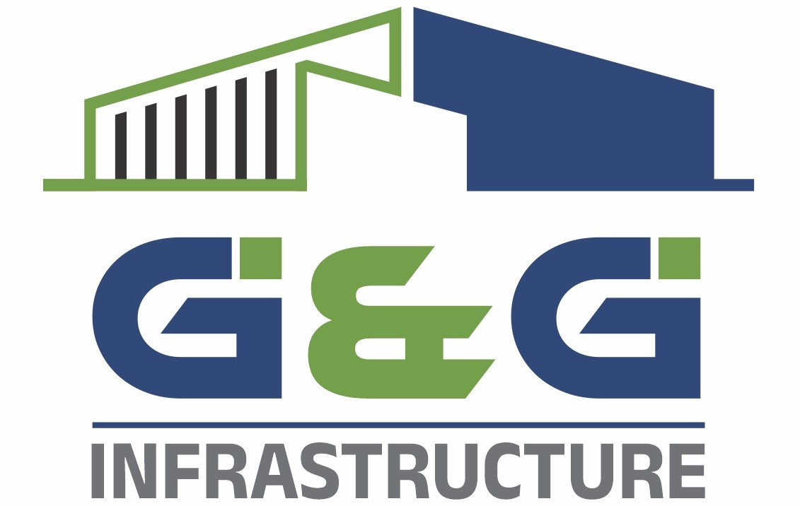

Founder of G&G INFRASTRUCTURE
Having 26+ years of experience in the construction field, Mr. Dattatraya Ingle has contributed to the growth and development of industrial and commercial infrastructure.
His vision focuses on quality construction, reliable execution, safety and long-term relationships with clients.
Our engineers focus on planning, technical execution and quality control.
Our experienced site team manages construction activities and daily execution.
Our project management team coordinates planning, resources, timelines and execution.